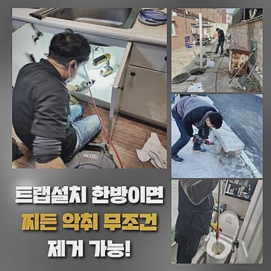
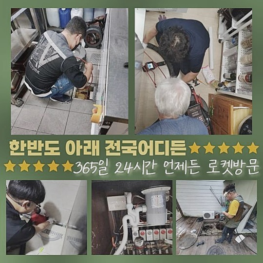
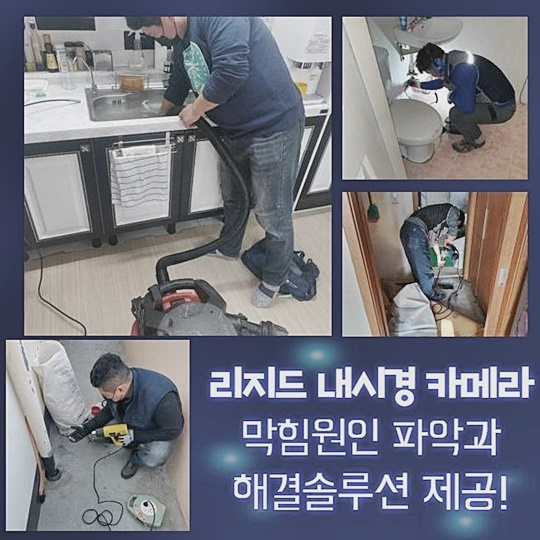
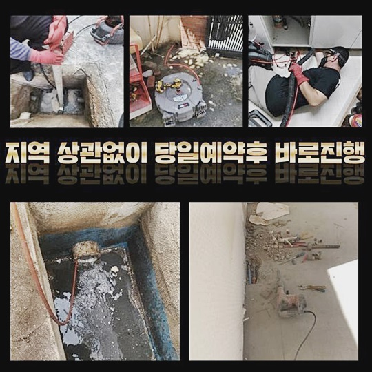
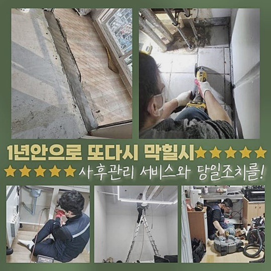
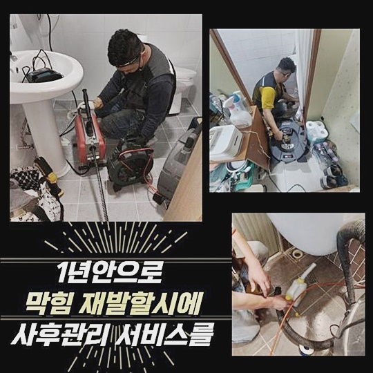

🏠 종로 세종로씽크대배수관막힘 삼청동 하수구뚫는비용 배관막힘누수
용인 싱크대막힘 전문 시공 후기

📋 작업 개요
- 위치: 용인
- 서비스 유형: 싱크대막힘, 하수구막힘, 배관막힘, 누수수리, 역류해결, 뚫는업체, 배관청소, 고압세척, 배관보수
- 작업 일시: 2024. 10. 3. 16:02
- 업체명: 하수구수사대 (010-5615-2118)
🔍 문제 상황
종로 세종로씽크대배수관막힘 삼청동 하수구뚫는비용 배관막힘누수
다수의 주거지나 상업지에서 하수계통의 오류로 인해 비닐을 씌우는 식으로 뚫어봤지만 무용지물이라서 무기력감을 호소하시는 경우가 많이 보입니다
어찌할 바를 모르겠다면 여러 케이스를 다뤄온 유능한 전문업체에 시공을 요청하려는 결정이 물길을 회복하는 부분에 가장 바람직한 방법이 됩니다
그러나 평범한 분들이라면 안타깝게도 어떤 요소를 비교해야 할지 애매하다는 생각이 들어서 한참 고심하시는 분도 적지 않을 텐데요
오늘의 현장 설명을 통해 도움이 되는 지식들을 숙지해 두시면 좋을겁니다
얼마 전 찾아뵀었던 하나의 작업지는 통로가 봉쇄되어 하수를 틀어보면 폐기되지 않고 범람하는 이상 증세가 일어난 증세라고 사전 접수를 했어요
나가야 할 물이 시원하게 방출되지 않고서 되려 지속적으로 머문다면 보편적으로는 관로에 더러운 오염원이 상당수 층을 이루게 되어 유도되는 현상인 것이죠!
현재 장소의 문제 요인을 분석해주고 보완하는 방향이 하자없이 문제점을 바로잡는 길입니다!
작업지에 얼른 이동하여 대부분의 잔여물들이 난감한 지대에 끼여있는지 봐주기 위해서 하수구 덮개를 개방 후 진단을 해봤어요
관로에 불필요한 찌꺼기 입자들이 계속 끼어 있음을 목격할 수 있었어요
단일 관로가 아닌 교차로의 잘못이 발생했다고 추정하고 확증을 얻으려고 심층부를 샅샅이 관찰이 가능한 배관 카메라 장비를 들여보냅니다

🔎 원인 분석
💡 전문가 진단: 정밀 진단 장비를 사용하여 슬러지의 고착 여부를 판명하고 타격/세척 작업을 실시했습니다.
깊숙한 지대까지 내시경 기구를 배정하여 살펴보니 그쪽엔 휘둥그레질만한 이물질과 찐득한 점성의 오물도 있었죠
험난한 환경 속에서는 혼자 도움된다고 광고하는 셀프도구를 다채롭게 복합적으로 쓰더라도 찰나의 완화 정도는 만들어져도 결국에는 막힘이 반복될 게 당연지사입니다
말라붙은 오물의 양에 따라서 초이스하는 작업 방식과 도구도 변동성을 주는데 이번 케이스는 물줄기를 통한 장치를 통해 처리하기로 정했습니다
여러군데에 부착되어 있는 노폐물을 남김 없이 말끔히 정리하는 그런 업무를 필히 거쳐야할 정도로 사태가 심각했다는 뜻입니다
고압세척기의 전원을 키고 세정을 시작하면 원통에서 물이 튈 것이고 내압을 늘리고 있던 덩어리들이 흘러나오니 거름망과 흡입 장치인 석션을 준비했죠
세월의 흐름을 맞아온 배관이라면 파손의 우려도 있으므로 무리가 가지 않는 레벨로 사전 셋팅을 하는 자세도 반드시 있어야만 합니다
배관 정화 작업의 실시를 끝마쳤다면 확실한 확증을 얻으려고 배관 카메라를 넣어 다시 모니터링을 하여 빈틈없이 완성됐나 최종 점검해요
오래 정화작업을 이어갔더라도 작업과정에서의 손상은 없는지 끊임없이 확인을 거듭하니 퀄리티가 다릅니다
다음 타임 고객님의 하수도 정상화를 만들어드리기 위해서 거리가 약간 떨어져 있던 작업장으로 향했습니다
예고도 없이 불현듯 하수관계가 고장이 나는 바람에 잇따라 역류 증세까지도 형성된 경우였습니다
일반 주거지라면 건물이 지어진 이래로 계속 적립되었을 오물들과 혼탁한 물이 뒤섞여서 불통되는 환경을 조성해요
문제를 분석해야하므로 장기간 쌓인 유해물질이 당연히 끼어 있을 수로의 컨디션을 점검해요

🔧 작업 과정
특수한 내시경으로 확인했더니 외부시설과 연계된 측면에서 걸림돌이 있음을 발견해 낼 수 있었습니다
깔린 배수로의 굴곡이 왜곡되고 다소 이색적이며 다수의 장소에서 오는 파이프와 이어진 결합부가 유독 많다고 보였습니다
파이프라인의 꼴과 현황에 대해 사전에 알아두지 않으면 갑작스럽게 직면하는 변동사항에 적응하지 못합니다
수습해야 할 양만 늘어나고 보수가 부실하게 끝나게 되니 초기 진단을 할 때 혼을 모두 쏟고 있어요
원인 검증을 하려고 구체적으로 탐색했고 연장선상에 접착이 된 슬러지가 문제의 발단임을 알게됐죠
이런 기름때의 종류는 응축된 물줄기를 분사해서 찌든 때까지 벗겨낸다면 끝날 문제라고 생각되었습니다
이것도 절차가 중요한데 먼저 배관의 형상을 완전하게 습득한 뒤에 내측으로 진입해서 보이는 이물질부터 긁어내려가야 합니다
실외 집수시설로 향하는 가까이에 있는 구간이 문제 소지가 있어보여서 이 부분을 스케일링하고 오물을 걸어올려줬어요
굵은 야외 하수도는 능숙한 기술력을 지니지 못한다면 해결의 실마리를 찾지 못하는데 여러 포트폴리오를 갖고 있고 능숙하게 허가 및 작업을 이어가니 마음 편히 계셔도 됩니다!
사전계획에 따라 배관부터 청소하고 하단부에 숨어있는 이물질 제거를 위해 고압세척을 해주는 기기를 세팅합니다
이 기기의 작동방식은 우수한 초고압 물로 묵은 찌꺼기와 때들을 씻어내려주기 떄문에 올바르게 배관 이슈 해결을 성취할 수 있게 지원합니다
기기 자체의 바디와 물 호스를 장착하여 목표지에 배정해서 파이프를 따라 붙어있는 슬러지를 주시하며 포커스를 두고 제거해 나갔어요
노즐을 쏘는 전후로도 카메라로 찍힌 스크린을 지속적으로 살피면서 현황을 파악해 주었습니다
안을 말끔히 씻어주고 무해한 환경이 됐나 봤더니 흠 잡을 곳 없이 처리가 끝났다고 확신할 수 있었어요!
청소 후의 사후 관리도 유지기간에 영향을 미치니 관리요강에 관해서도 설명해 드렸으며 동일한 문제가 발생하면 처리해드린다고 안심시켜 드렸어요
막힘 및 하수구 곤란을 가장 빠른 일정을 잡아서 직접 분석하여 계획 하에 업무하며 세정을 받았으나 효과를 얻지 못했다면 전혀 금전적인 요구는 없을 겁니다
하수구문제는 각양각색의 이유로 시작이 되며 작업지마다 환경적 요인들이 제각각이니 당연히 작업도 달라져요
저희 업체는 다양한 영민하게 처리해 왔으며 상황별로 올바른 매뉴얼이 탄탄하게 마련되어 있어요
배관의 생김새는 기본이고 탄탄한 정도 등 모든 것을 고려한 후 가장 효과적인 수순을 밟습니다


✅ 작업 완료
이처럼 원인 분석을 숙지한 다음에 차근히 기기 관리에 들어가야 균열이나 누수같은 결함을 예방할 수 있죠
하수가 고립되는 상황은 어제만 해도 멀쩡하다가 뜬금포로 찾아오는 불청객이에요
유독 수돗물이 느릿느릿 빠지고 역류가 생기는 전조증상이 반드시 있습니다
수도설비를 활용하시다가 묘하게 퇴보한 듯 보일 때 서둘러 의뢰를 주신다면 기대 이상으로 간편하게 보수를 해드릴 수 있습니다
낮이든 밤이든 도움을 요청하시면 준비를 철저히해서 가겠습니다




⚠️ 베란다 누수 및 방수 관리 방법
- ✅ 비가 많이 올 때 창틀 주변이나 아래층 천장에 얼룩이 생기는지 정기적으로 확인해 보세요.
- ✅ 우수관 주변 실리콘 마감이 들뜨거나 깨진 틈새가 있는지 손상 여부를 수시로 체크하세요.
- ✅ 베란다 바닥 타일의 줄눈(메지)이 소실되면 그 틈으로 물이 침투하여 누수가 유발됩니다.
- ✅ 누수 의심 증상 발견 시 방치하면 아래층 손실이 커지므로 즉시 전문가의 진단을 받으십시오.
💡 핵심 정리
- 확실한 장비 작업(내시경 점검 및 샤프트 스케일링)으로 원인을 뿌리 뽑습니다.
- 작업 후 1년 이내에 동일한 부위 재발 시 100% 무상 A/S 서비스를 보장합니다.
- 서울 · 경기 · 인천 전 지역에 24시간 언제든 긴급 출동할 수 있도록 항시 대기 중입니다.
❓ 자주 묻는 질문 (FAQ)
🚨 용인 싱크대막힘 문제로 고민이신가요?
정확한 원인 진단과 확실한 시공으로 재발 없는 해결을 약속드립니다.
24시간 긴급 출동 | 서울 · 경기 · 인천 전지역 | 1년 내 재발 시 무상 A/S